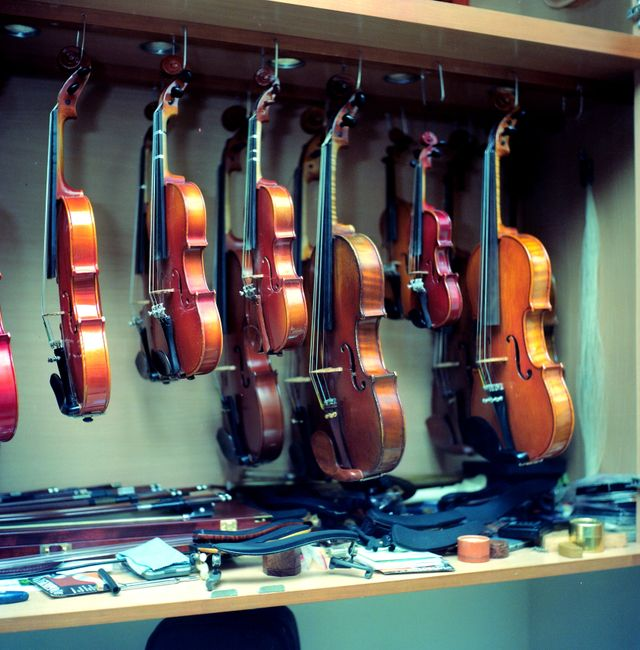

Cuidado minucioso, acústica precisa y preservación de instrumentos de cuerda.

Nombre completo del músico o titular:
Teléfono móvil para coordinación de turno:
Correo electrónico:
Tipo de instrumento a ingresar: Seleccione una opción Violín Viola Violonchelo Contrabajo Guitarra clásica / española Otro instrumento de cuerda
Antigüedad o procedencia aproximada (autor, fábrica o año si se conoce):
Descripción detallada del problema o síntomas sonoros (ruidos extraños, cerdeos o golpes sufridos):
Comprendo que el presupuesto definitivo solo se emitirá tras la inspección física del instrumento en el banco de trabajo